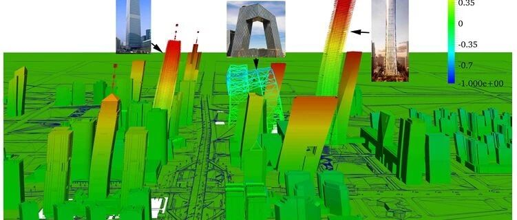

新论文：城市建筑群多LOD震害模拟及北京CBD算例
城市建筑群多LOD震害模拟及北京CBD算例
Multi-LOD seismic-damage simulation of urban buildings and case study in Beijing CBD
Bulletin of Earthquake Engineering
论文链接：
https://link.springer.com/article/10.1007/s10518-018-00522-y
一句话摘要：本文提出了一个适用于不同计算精度、计算速度、可视化效果、数据详实程度的城市建筑群震害模拟框架，并以北京CBD复杂高层建筑群为例进行了案例演示
1.研究背景


2.多源数据与多LOD城市区域震害模拟
区域建筑震害模拟主要利用三类数据（图1）

图1 多源数据分类
为了展示不同类型多源数据与不同详细程度震害模拟方法的需求关系，本研究提出了城市区域建筑震害模拟的多LOD模拟框架（图2）。

图2 多LOD区域建筑震害模拟框架
多LOD区域建筑震害模拟框架主要分为两个部分。第一部分为多源数据的输入；第二部分为震害模拟和可视化模拟方法。震害模拟部分包括LOD 0–3四个层级的震害模拟和可视化方法。
其中高LOD层级的震害模拟结果可以用低LOD的可视化方法进行展示。例如，LOD 0–3层级震害模拟的结果都可以采用LOD 0层级GIS的方式进行展示。但是LOD 3层级构件层次的可视化展示必须要LOD3层级构件层次的精细有限元模拟结果作为数据输入。
不同LOD模拟方法各有优缺点，某日，小橙（LOD0）、小蓝（LOD1）、小黄（LOD2）和小黑（LOD3）见面后（图3）。。。


图3 小LOD们的日常
对于一个具体的城市，可以根据多源数据的详细程度、分析精度需求、计算能力差异以及分析时效要求，灵活选择相应LOD层级的模拟方法开展分析。
3.实现方法
多LOD区域建筑震害模拟的具体实现主要有三个流程（图4）。

图4 多LOD区域建筑模拟框架的实现流程
首先，将不同类型的城市多源数据存储于统一的城市数据中；其次，根据实际分析需求，从统一城市数据中调取结构数据和地震动数据，通过自动建模和结构震害模拟，得到区域建筑震害模拟结果。并将结果存储于统一的城市数据之中；最后，根据可视化分析需求，从统一的城市数据中调取相应可视化数据以及建筑震害结果数据，并开展区域建筑震害结果展示。
4.算例分析
（1）建筑介绍
下面通过一个算例展示本方法的效果。选取北京CBD开展研究（图5）。北京CBD区域内建筑多样，不但拥有高层建筑片区，还分布着一个多层建筑密集的呼家楼住宅区域（图6）。因此能充分展示多LOD分析的效果。

图5 北京CBD示意图

图6 北京CBD区位图
通过数据统计发现，呼家楼居民区内建筑密集，区域内大部分建筑为4-6层的设防砌体结构。其结构类型以及层数分布如图7所示

图7 呼家楼片区结构分布
（2）地震数据获取
本算例所采用的地震数据主要基于Fu (2012)开展的地震场景模拟的研究结果。分析得到的北京CBD区域内典型地震反应谱（图8）、地震动加速度（图9）和速度时程记录（图10）。

图8 典型反应谱

图9 地震动加速度

图10 速度时程记录
为了对比不同地震动的影响，本研究还选取了没有速度脉冲的El-Centro和有速度脉冲的CHICHI_CHY101-N地震动，并将其PGA调幅至和图10中典型三河-平谷地震动一样的PGA（1.580 m/s2），用于之后的模拟分析。
（3）北京CBD的LOD0层级震害模拟
LOD0层级震害预测需要的输入数据仅为建筑的结构类型和场地的烈度数据，这里采用尹之潜建议的中国不同类型建筑的震害矩阵。此外，LOD0层级易损性分析无法考虑输入地震动的个性差异，因此对于三河-平谷地震场景、El-Centro和CHICHI地震动输入，由于被调幅至相同的PGA，同为VII度区，区域震害结果相同，皆如图11所示。不过LOD0层级模拟速度很快，几乎瞬时得到结果。

图11 LOD0层级震害矩阵方法预测结果
（4）北京CBD的LOD1层级震害模拟
根据北京CBD地区建筑的属性数据，可以得到不同建筑的能力曲线，基于三河-平谷地震动、El-Centro和CHICHI地震动的反应谱（图12），就可以根据能力-需求方法得到北京CBD地区LOD1层级的震害预测结果（图13）。由于三河-平谷地震和CHICHI地震反应谱差距较大，因此震害模拟结果不同。但是三河-平谷地震和El-Centro地震在2s以下反应谱相似，因此模拟结果基本也一样。另外LOD1层级模拟大概需要10.2s的计算时间。

图12 反应谱对比

图13 LOD1层级能力-需求分析方法区域计算结果对比
（5）北京CBD的LOD2层级震害模拟
根据区域建筑的属性数据，建立这些建筑的MDOF模型，再通过非线性时程分析，就可以得到LOD2层级的震害预测结果（图14）。LOD2层级模拟可以更好考虑不同地震动的差异以及结构不同楼层的损伤集中。LOD2层级模拟需要的时间大概是LOD1层级模拟的8倍。

图14 LOD2层级时程分析方法区域计算结果对比
震害分析模型有不同的LOD层级，可视化也有不同的LOD层级。LOD2层级的震害模拟结果可以采用LOD 0–2 层级的可视化方法进行展示。其中图14中的结果为LOD 0层级基于GIS的可视化展示，LOD 0层级的可视化展示应用较为简单，并且能清晰展示损伤的分布情况。
图15为LOD 1层级2.5D可视化展示，该可视化方法可以展现三维的震害场景，并且能展示不同楼层的模拟结果（位移响应、各层损伤程度等）。

图15 LOD 1级2.5D可视化展示
图16为LOD 2层级3D可视化展示，该可视化方法可以展现更为真实的建筑立面效果。

图16 LOD 2级3D可视化展示
（6）北京CBD的LOD3层级震害模拟
高层建筑和超高层建筑动力特性较为复杂，LOD 0和LOD 1层级方法无法较好地模拟高层的抗震性能。LOD2层级方法采用MDOF弯剪耦合模型能较好模拟一般高层建筑的弯剪耦合侧移特性，并且能考虑高阶振型对结构地震响应的贡献。但对于超高层建筑由于存在加强层，结构的各层刚度不再满足MDOF模型中的均匀化假定。因此，建议采用LOD 3层级精细有限元方法分析复杂特殊建筑的抗震性能。
为了对比LOD 2和LOD 3层级方法对高层建筑的模拟效果，分别采用这两种方法对74层的国贸三期大厦进行了模拟。如图16所示，可以看出两种方法计算的顶点位移结果吻合良好（图17a），但层间位移角结果差异较大（图17b）。当然，LOD 3层级精细化模型的计算时间需求也是非常巨大的。

图17 LOD2与LOD3层级结构模拟结果对比
这是因为该超高层建筑在多个楼层设有加强层，只有LOD 3层级精细有限元模型才能更细致地反映复杂特殊建筑实际的抗震性能。
采用精细有限元构件层次的可视化模型，可以对北京CBD高层建筑群开展LOD 3层级的震害结果展示。如图18所示。


图18 基于精细有限元模型的LOD 3级可视化展示
相比图16的可视化效果，LOD 3层级的可视化可以展示构件层次的地震响应（图18a），并能展示建筑构件层次的损伤情况（图18b）。
5.结论
本研究提出了一种城市区域的多LOD震害模拟框架，以及实现过程，然后通过北京CBD地区的算例分析，对比得出不同的LOD模拟方法的优缺点总结如下：
（1）LOD0层级模拟：易于实施，但是无法考虑不同地震的影响。
（2）LOD1层级模拟：易于实施，可以考虑地震动频谱特征差异的影响。但LOD1层级的能力需求分析不能充分考虑地震动时域的差异，不适用于高层建筑。
（3）LOD2层级模拟：基于时程分析方法的MDOF模型，能较好的考虑不同地震动的频域和时域特征。但MDOF模型无法模拟超高层建筑的构件层次响应结果。
（4）LOD3层级模拟：采用精细有限元构件层次的可视化模型，能更好地考虑城市中特殊建筑的抗震性能。但建模和计算工作量很大，因此仅适用于城市中个别抗震性能较为特殊的建筑。
后记：我本人很喜欢这篇论文。整个论文构思了4年多，光写作就花了400多天，反复讨论、多次推翻重来。它把传统的城市震害易损性分析、到最新的城市抗震弹塑性分析，以及建筑抗震弹塑性分析，融合到了一个框架下，并总结了不同方法之间的关系和优缺点。

熊琛
相关研究
长按识别二维码，关注我们的科研动态